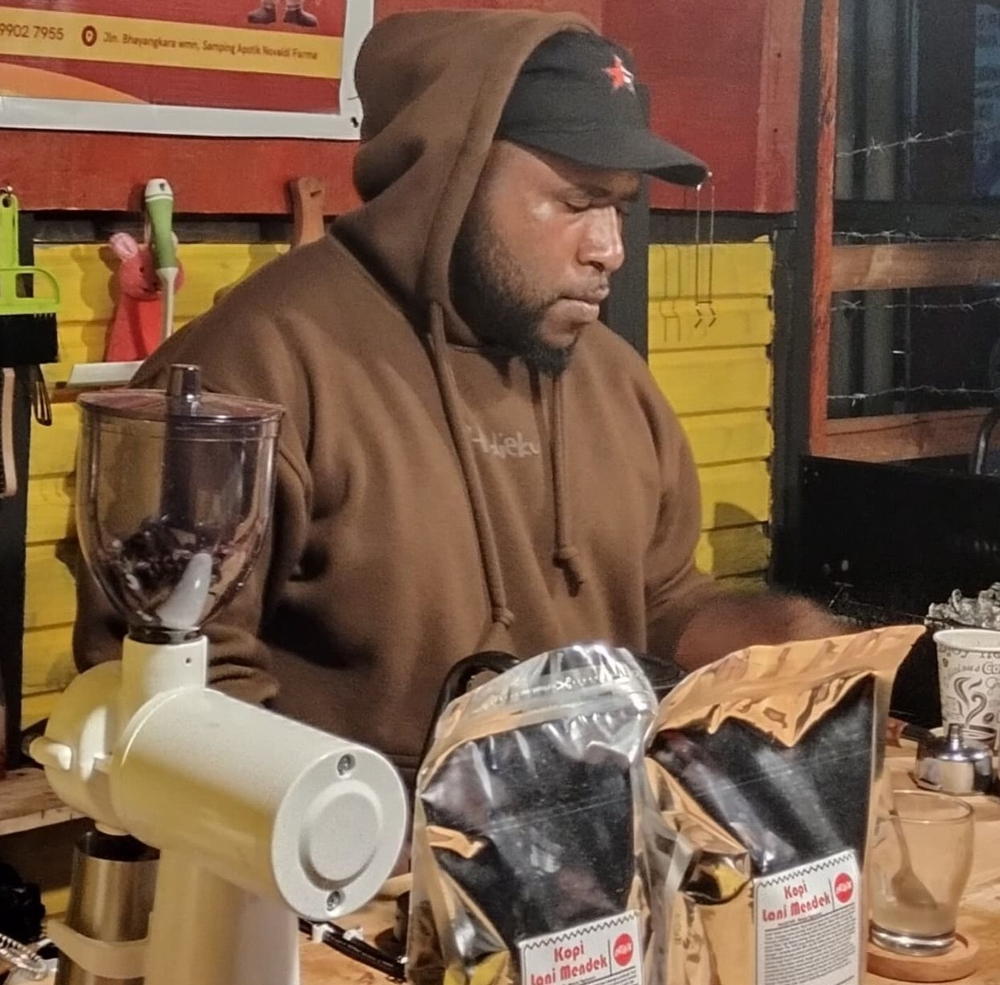

Profil Kedai Kopi Nogi
Kedai Kopi Nogi adalah sebuah kafe yang terletak di Jln Rian, sebelah SMA PGRI Wamena, Kabupaten Jayawijaya, Papua. Kedai ini dikenal sebagai tempat yang nyaman untuk menikmati kopi dengan cita rasa khas, sekaligus menjadi tempat inspiratif bagi anak muda Papua. Kedai ini didirikan dengan semangat untuk memajukan bisnis kopi lokal serta memberdayakan anak-anak muda Papua agar dapat berkembang di dunia kerja dan wirausaha.
Profile Kedai Kopi Nogi
Sepi Wanimbo adalah seorang pengusaha muda dan barista berbakat yang mengawali kariernya dari nol. Berbekal tekad dan kegigihan, ia mendalami seluk-beluk dunia kopi, mulai dari proses pemilihan biji kopi terbaik, teknik roasting yang tepat, hingga cara menyajikan kopi berkualitas tinggi.
Perjalanan dan Pencapaian
✅ Lahir dan besar di Papua – Sepi Wanimbo tumbuh di lingkungan yang kaya akan tradisi
dan
budaya, yang membentuknya menjadi pribadi yang tangguh dan inovatif.
✅ Pendidikan dan pengalaman – Ia menempuh pendidikan dengan fokus pada kewirausahaan dan
industri kopi, serta mengikuti berbagai pelatihan untuk meningkatkan keahliannya.
✅ Kedai Kopi Nogi – Berperan sebagai motor penggerak utama dalam pengelolaan kedai ini,
ia
memastikan setiap cangkir kopi yang disajikan memiliki cita rasa autentik Papua.
✅ Pelestarian Budaya Lokal – Selain membangun usaha, ia juga aktif dalam mengangkat
budaya
dan
tradisi Papua melalui kopi, menciptakan ruang bagi masyarakat untuk berkumpul dan
berbagi
cerita.
✅ Inovasi dan Visi – Dengan visinya, Sepi Wanimbo ingin membawa kopi Papua ke tingkat
yang
lebih
tinggi, dikenal tidak hanya di dalam negeri tetapi juga di kancah internasional.
Profil Ketua & Karyawan
Karyawan yang Ada di caffe Nogi .



1. Ketua Kedai Kopi Nogi: Seorang Sepi Wanimbo, S.AB
Sepi Wanimbo adalah sosok inspiratif yang berasal dari Kabupaten Lanny Jaya. Ia adalah seorang anak muda Papua yang bekerja keras membangun Kedai Kopi Nogi. Dengan latar belakang pendidikan Sarjana Administrasi Bisnis (S.AB), ia memiliki visi untuk menjadikan Kedai Kopi Nogi sebagai pusat ekonomi kreatif bagi anak muda di Wamena.
Sebagai pemimpin, Sepi Wanimbo bertanggung jawab atas:
✅ Mengelola bisnis dan strategi pemasaran kedai.
✅ Menjalin kerja sama dengan petani kopi lokal.
✅ Meningkatkan kualitas pelayanan dan produk.
✅ Memberikan motivasi serta pelatihan kepada karyawan.

2. Jowel Kogoya – Barista & Pengelola Stok Kopi
Owel Kogoya adalah salah satu karyawan yang bertugas sebagai barista di Kedai Kopi Nogi. Ia memiliki keahlian dalam meracik berbagai jenis kopi, mulai dari kopi hitam, espresso, hingga cappuccino.
Tugasnya meliputi:
☕ Membuat dan menyajikan kopi berkualitas kepada pelanggan.
☕ Mengelola stok bahan baku seperti biji kopi, susu, dan gula.
☕ Memastikan kebersihan dan kerapihan area barista.
☕ Memberikan rekomendasi minuman kepada pelanggan.

3. Saldo Kogoya – Kasir & Customer Service
Saldo Kogoya bertugas sebagai kasir dan customer service di Kedai Kopi Nogi. Ia bertanggung jawab dalam memastikan transaksi berjalan lancar serta memberikan pelayanan terbaik kepada pelanggan.
Tugasnya meliputi:
💰 Mengelola transaksi pembayaran pelanggan (tunai & digital).
💰 Mencatat pemasukan dan pengeluaran harian.
💰 Menyambut pelanggan dengan ramah dan membantu mereka dalam memilih menu.
💰 Menanggapi pertanyaan dan keluhan pelanggan dengan baik.